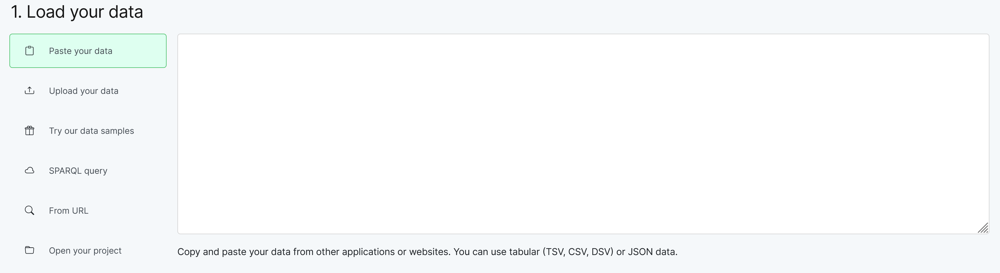

Daten visualisieren mit RAWGraphs
Download des für RAWGraphs aufgearbeiteten Datensatzes
Diese Lecture-Einheit zielt darauf ab, die in unserem Übungsdatensatz enthaltenen Daten in verschiedenen Typen von Diagrammen graphisch darzustellen. Hierzu werden wir uns zuerst mit der Frage beschäftigen, was eine gute graphische Darstellung ausmacht und worauf generell bei der Erstellung von Datenvisualisierungen geachtet werden sollte. Mithilfe des Web-Tools RAWGraphs, dessen Funktionalitäten wir an ein paar Beispielen erklären, werden wir dann bezogen auf unseren Datensatz verschiedene Diagramme erstellen.
Was ist RAWGraphs?
- Funktion: Man kann eine Datentabelle hochladen, um aus den Daten Visualisierungen in Form von Diagrammen zu erstellen (Balkendiagramme, Kurvendiagramme, Tortendiagramme etc.)
- Open Source Tool, kann kostenfrei genutzt werden
- keine Installation notwendig, kann als Web-App im Browser benutzt werden
- keine Programmierkenntnisse notwendig
- Alternative zu Tools wie Excel, Tableau und Programmiersprachen wie Python und R, mithilfe derer ebenfalls Visualisierungen hergestellt werden können
Wie ist RAWGraphs zu benutzen?
- RAWGraphs bietet Beschreibungen und Tutorials über die Funktionalitäten des Tools und die Erstellung bestimmter Diagrammtypen an: RAWGraphs Tutorials (auf Englisch)
- Zudem sind hier Beschreibungen für die Erstellung von Diagrammtypen zu finden, die im Rahmen des DiCi-Hub-Projekts erstellt wurden
Hochladen von Datentabellen

Es gibt verschiedene Optionen, Daten in RAWGraphs einzufügen/hochzuladen. Es können Daten im Format tsv, csv und dsv sowie JSON genutzt werden.
Paste your data: Hier kann eine Tabelle (z.B. aus Excel) kopiert und eingefügt werden. Dies ist nur bei kleinen Tabellen ratsam, da die Gefahr eines Datenverlusts inbesondere bei komplexen Datentabellen bei Copy und Paste recht hoch ist. Es muss darauf geachtet werden, dass die Daten den oben genannten Formaten entsprechen. Eine Tabelle aus einem Textverarbeitungsprogramm wie Word kann hier nicht einfach eingefügt werden.
Upload your data: Hier kann eine lokal gespeicherte Datentabelle hochgeladen werden. Dieser Weg ist generell zu empfehlen, da er weniger fehleranfällig ist.
Try our data samples: RAWGraphs bietet für fast alle Diagrammtypen Beispieldatensätze zu Übungszwecken an. Dies ist ein guter Einsteig um die Funktionen von RAWGraphs kennen zu lernen.
SPARQL query und From URL: Hier besteht die Möglichkeit, Daten über eine SPARQL-Abfrage (z.B. über Wikidata) einzufügen oder diese direkt von einer Webseite abzurufen. Das erfordert jedoch Zusatzkenntnisse.
Open your project: Hier besteht die Möglichkeit, ein eigenes RAWGraphs-Projekt hochzuladen. Wenn man mit der Erstellung einer Visualisierung begonnen hat und diese zu einem späteren Zeitpunkt weiter bearbeiten möchte, kann diese über die Exportfunktion (s.u.) lokal gespeichert werden.
Tabelleneinstellungen
RAWGraphs bietet nicht viele Optionen, das Format der Tabelle zu verändern. Die Inhalte müssen bereits vor Einfügen in ihrem finalen Zustand vorliegen. Es gibt aber folgende Optionen die Formatierung und Inhalte zu beeinflussen:
Data Parsing Options
Column separator: Im Normalfall erkennt RAWGraphs den korrekten Separator einer Tabelle, durch den die einzelnen Spalten definiert sind, automatisch. Sollte es hier jedoch zu einem Fehler kommen, kann manuell eingestellt werden, ob es sich um ein Komma, einen Tab, ein Semikolon oder einen Pipe-Strich (|) handelt.
Thousands separator und Decimal separator: Hier lässt sich für die Datentabelle einstellen, ob die Tausender- oder Dezimalstellen einer Zahl durch Komma oder Punkt gekennzeichnet sind.
Date Locale: Hier lassen sich verschiedene länderspezifische Datumsformate einstellen.
Data Transformation
Stack on: Über dieses Feld lässt sich die Datenstruktur der Tabelle von einer zeilenorientierten in eine spaltenorientierte Form oder andersherum bringen. Eine genaue Erklärung hierzu findet sich unter folgendem Link: “Meet the unpivoter”. Da diese grundlegende Veränderung der Datenstruktur oft schwer umzusetzen ist, ist es meist ratsam, die Datenstruktur bereits im Vorfeld vor Hochladen in RAWGraphs in das richtige Format zu bringen.
Reset: Löscht die hochgeladene Datentabelle und alle bei den Visualisierungen gemachten Einstellungen und gibt die Möglichkeit, einen neuen Datensatz hochzuladen.
Change data: Hat man bereits eine Visualisierung erstellt und möchte genau in diesem Format eine weitere Visualisierung mit einem anderen Datensatz erstellen, kann über diese Funktion der weitere Datensatz hochgeladen werden. Alle anderen Einstellungen bleiben erhalten. Dieser weitere Datensatz muss aber in exakt derselben Struktur wie der erste Datensatz vorliegen.
Bearbeiten des Datenformats
Durch Anklicken des runden Feldes neben dem Namen der Spalte öffnet sich eine Drop-Down-Liste, mithilfe derer das Datenformat der Spalte verändert werden kann.
Choose a chart and Mapping
RAWGraphs stellt für jeden Diagrammtyp ein ca. anderthalb Minuten langes Tutorial zur Verfügung. Gleichzeitig können zur Entscheidung, welcher Diagrammtyp genutzt werden sollte und wie mit dem Mapping umgegangen werden muss, die hier zur Verfügung gestellten Beschreibungen für die Erstellung von Diagrammtypen herangezogen werden.
Eine weitere Quelle, die einen Überblick über Diagrammtypen und ihre Verwendung bietet, sind die online verfügbaren Artikel “How to Choose the Right Data Visualization” oder “A Tour through the Visualization Zoo”. (Stand Oktober 2023)
Beim Mapping werden die Dimensions per Drag&Drop auf die Felder der Chart Variables gezogen. Die mit einem roten Sternchen gekennzeichneten Felder sind verpflichtende Angaben, alle weiteren sind optional.
Eine Besonderheit beim Mapping stellt zudem die Option der Aggregation von Werten dar. Aggregation von Werten ist nur bei einigen Variablen möglich, und zwar sind dies “Size”, “Color” and “Labels”. RAWGraphs wählt automatisch eine Aggregationsmöglichkeit aus, über ein Drop-Down-Feld lässt sich dies aber anpassen.
Anhand einer konstruierten Beispieltabelle sollen die verschiedenen Aggregationsmöglichkeiten kurz vorgestellt werden:
| Tier | Anzahl |
|---|---|
| Katze | 15 |
| Hund | 12 |
| Kaninchen | 9 |
| Wellensittich | 3 |
| Katze | 22 |
| Hund | 17 |
| Kaninchen | 15 |
| Katze | 32 |
Würde man diese Tabelle in RAWGraphs einfügen und daraus ein Balkendiagramm erstellen wollen:
count und count unique: Hier wird die Wertespalte der Tabelle (also in diesem Fall die Spalte “Anzahl”) nicht berücksichtigt, sondern gezählt, wie oft eine Kategorie in der Spalte Tier vorkommt. In einem Balkendiagramm wäre der Balken für die Katze damit 3 Einheiten hoch, während die Balken für die anderen Tiere jeweils 2 Einheiten hoch wären. Prinzipiell würde die Funktion count unique dagegen jede Kategorie nur einmal zählen, um eine Auflistung zu bekommen, welche Kategorien in der Tabelle vorhanden sind. Bei unserer Arbeit mit RAWGraphs hat diese Funktion jedoch in keinem Kontext bisher funktioniert und wäre vermutlich auch für die Erstellung eines Diagramms nur schlecht zu nutzen.
average: Hiermit wird ein Durchschnittswert ermittelt. In Bezug auf die Katze wäre der Durchschnittswert 23 ((15+22+32)÷3). Dieser könnte ebenfalls in einem Balkendiagramm als Balkenhöhe angegeben werden.
max: Hier werden nur die Maximalwerte angegeben. Dies würde bedeuten, dass aus der oben genannten Tabelle in einem Balkendiagramm der Balken für die Katze 32 Einheiten hoch wäre, für den Hund 17, das Kaninchen 15 und den Wellensittich 3.
min: Hier werden nur die Minimalwerte angegeben. Dies würde bedeuten, dass aus der oben genannten Tabelle in einem Balkendiagramm der Balken für die Katze 15 Einheiten hoch wäre, für den Hund 12, das Kaninchen 9 und den Wellensittich 3.
sum: Hiermit werden Werte derselben Kategorie summiert. Für Kaninchen würde sich also mit der oben genannten Tabelle die Summe von 24 ergeben. Beispielsweise wäre der Balken in einem Balkendiagramm dann 24 Einheiten hoch.
median: Hier wird der Median gebildet. Der Median ist der Wert, der genau in der Mitte einer Datenverteilung liegt, auch Zentralwert genannt. Dies lässt sich anhand der oben genannten Tabelle nicht gut darstellen, daher hier ein anderes Beispiel. Es gibt eine Wertereihe von 1 7 16 18 32 96 102. Darin ist der Median 18, also der Wert, der genau in der Mitte der Zahlenreihe liegt. Als Vergleich: Der Durchschnittswert liegt dagegen bei 38,857.
csv und csv unique: Bei unserer Arbeit mit RAWGraphs ist uns diese Form der Aggregation bisher nur in Zusammenhang mit hierarchischen Diagrammen begegnet (z.B. Treemap, Circular Packing) für die Farbeinteilung (Color) oder das Anzeigen von Labels, wobei es sich in diesen Kontexten dann nicht um eine typische Aggregation handelt, sondern es um Werte in Wortform geht.
Anpassen der Größe der Graphik

Width und Height: Hier lässt sich die Gesamtgröße der Graphik einstellen.
Background: Hier lässt sich eine Hintergrundfarbe für die Graphik auswählen.
Margin: Hier kann eingestellt werden, wie viel “weiße Fläche” rund um das eigentliche Diagramm dargestellt werden soll. Dies kann optisch schöner sein, es hat aber auch praktische Zwecke, wenn das Diagramm längere Beschriftungen aufweist, die ohne Zusatzrand abgeschnitten würden.
Anpassen von Farben und Beschriftungen
Die in den Abschnitten Chart, Colors, Labels möglichen Einstellungen variieren z.T. zwischen den Diagrammtypen. Ein Farbschema ist letztlich leicht auswählbar, da vorgefertigte Sets von Farben angeboten werden. Eine eigene Farbzusammenstellung ist allerdings nicht möglich. Auch ist leicht einstellbar, ob Labels innerhalb des Diagramms angezeigt werden sollen oder nicht.
Einzelne Beschreibungen zu der Rubrik Chart finden sich in den jeweiligen Tutorials zu den Diagrammtypen in RAWGraphs und den hier vorgestellten Erklärungen zu den einzelnen Diagrammtypen.
Für einige Diagrammtypen (z.B. Bar chart, Line chart, Bumpchart) besteht zudem die Möglichkeit eine Serie (Series) anzulegen. Hierzu werden mehrere Diagramme erstellt, wobei jedes Diagramm beispielsweise Daten aus einem einzelnen Jahr oder verschiedenen einzelnen Ländern repräsentiert. Man kann dabei selbst bestimmen, in wie vielen Spalten die einzelnen Diagramme nebeneinander angeordnet werden und ob für jedes Diagramm eine eigene Achse angezeigt wird oder möglicherweise sogar unterschiedliche Skalen für die Diagramme benutzt werden. Bei unterschiedlichen Skalen stellt sich jedoch die Frage, ob sich die einzelnen Diagramme noch sinnvoll vergleichen lassen.
Export eines Diagramms
Ein erstelltes Diagramm kann in den gängingen Graphikformaten exportiert werden (jpg, png, svg). Des Weiteren besteht die Möglichkeit eine .rawgraphs-Datei zu erstellen, die dann erneut in RAWGraphs geöffnet und weiterbearbeitet werden kann.
Was ist allgemein bei der Benutzung von RAWGraphs zu beachten?
- es gibt nur wenige Möglichkeiten, Tabellen umzuformatieren; Daten müssen schon vorher bereinigt sein
- es darf keine eine leeren Zellen geben, jede Zeile/Spalte muss komplett ausgefüllt sein
- bei Zahlen mit Maßangaben darauf achten, dass die Maßangabe (also der Textteil) entfernt wird, ansonsten wird die Zahl nicht korrekt erkannt
- in jeder Zelle darf nur genau ein Wert stehen, mehrere Werte in einer Zelle können nicht verarbeitet / erkannt werden
- bei der Auswahl eines geeigneten Diagrammtyps und der Vorformatierung der Tabelle hilft es tendenziell eher in Spalten als in Zeilen zu denken
- insbesondere die Beschriftung der erstellten Diagramme kann in RAWGraphs nur bedingt verändert werden; die Beschriftung orientiert sich automatisch an den Angaben in der Datentabelle; generell können in RAWGraphs erstellte Diagramme in anderen Bearbeitungsprogrammen für Graphiken nachbearbeitet werden
- ein mit RAWGraphs erstelltes Diagramm muss nicht zwangsweise als „mit RAWGraphs hergestellt“ gekennzeichnet werden; es wird allerdings eine Zitiermöglichkeit von RAWGraphs geboten
Was macht eine gute Visualisierung aus?
Alberto Cairo hat fünf Kriterien einer guten Visualisierung definiert (siehe dazu ausführlich beispielsweise die Materialien des “UMSL Data-Viz-Workshops-2021” oder Rehbein, M. (2017). Informationsvisualisierung. In: Jannidis, F., Kohle, H., Rehbein, M. (eds) Digital Humanities. J.B. Metzler, Stuttgart.)
- truthful (Daten müssen korrekt sein)
- functional (Darstellung soll eine bestimmte Funktion erfüllen)
- beautiful (Darstellung soll ästhetisch ansprechend sein)
- insightful (Darstellung soll einen guten Einblick in die Daten ermöglichen)
- enlightening (Darstellung sollte den Wissensstand erweitern)
Beispiele für gute und schlechte Visualisierungen sind zudem in der “Datavis Gallery” und in einem von der University of Auckland bereitgestellten PDF Statistics 120 Good and Bad Graphs zu finden.
Die Screenshots wurden von Theresa Blaschke erstellt. Zuletzt bearbeitet am 14.11.2023